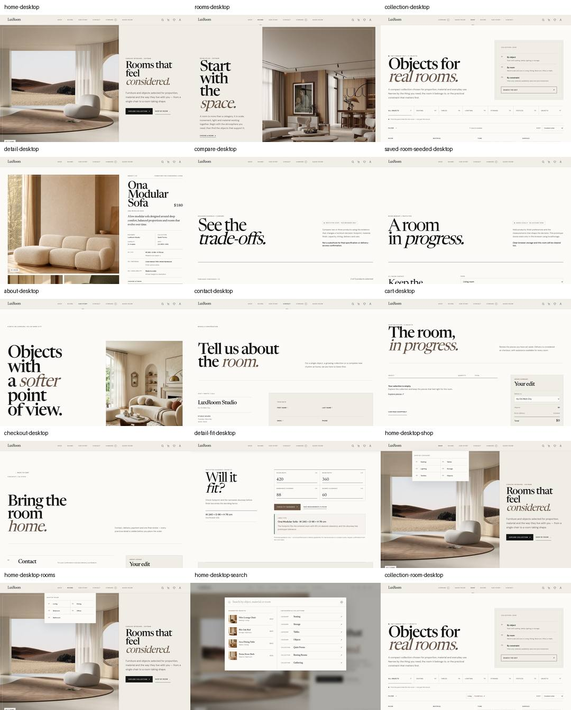
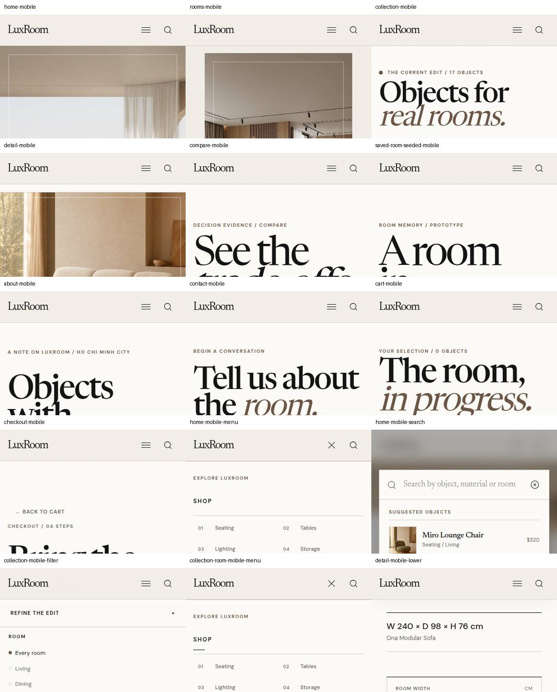

10 / Responsive & adaptive
Recompose the task.
Do not shrink the desktop.
Navigation unfolds differently, product grids collapse, filters become touch-first and PDP media gives way sooner to product identity.
Editorial splits and broad product context.
Reduced gutters and tighter catalogue density.
Stacked editorial regions and simplified utility layout.
Touch-first navigation, filters and condensed evidence.
Compact desktop SHOP / ROOMS flyouts.
Mobile exposes category and room links immediately; no hover dependency.
Visible refinement controls + multi-column catalogue.
Touch-oriented filter surface + narrower grid while result scope stays visible.
Media/evidence split with large gallery.
Compact media sequence followed quickly by title, price and decision evidence.
Aligned cross-product rows.
Constrained product count and prioritized attributes preserve readability.
Rendered QA evidence
Desktop and mobile checked as real pixels.
Committed contact sheets provide current representative evidence; the wider QA workflow also exercises Home, Collection and PDP pressure points.

